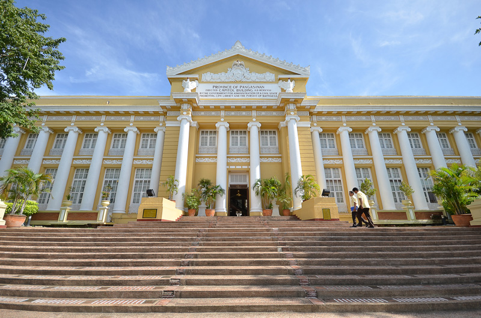
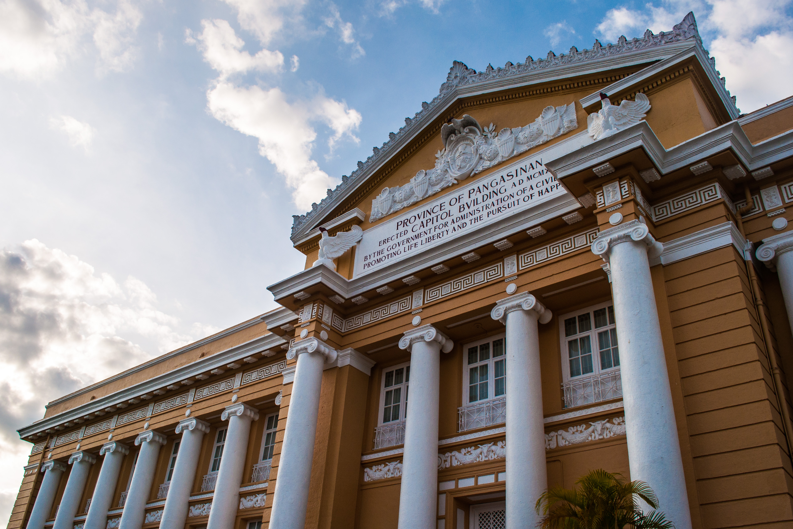
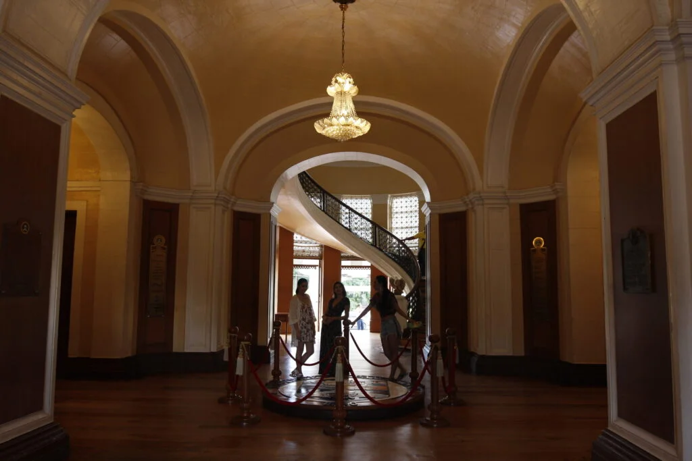
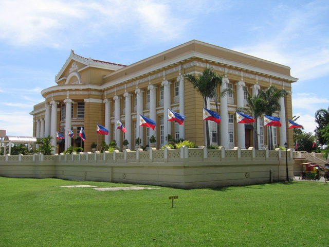

The Pangasinan Provincial Capitol Building in Lingayen, Pangasinan, Philippines, is the seat of the provincial government and one of the country’s best-preserved neoclassical landmarks. Built during the American colonial period, it symbolizes Pangasinan’s political heritage and architectural pride, having survived war, reconstruction, and modernization.
Fun Facts
- Known for its long colonnade and symmetrical design.
- Located near the historic Lingayen Gulf landing sites of WWII.
- Frequently used as a backdrop for cultural events and tourism photos.
Historical Background

Construction of the Capitol began in 1917 under Governor Daniel Maramba and architect Ralph Harrington Doane. It reflected the American colonial government’s neoclassical design ideals, with grand columns, pediments, and a symmetrical façade. Damaged during World War II, it was reconstructed in 1948 and restored between 2007 and 2008, preserving its original form and structural integrity.
Architectural and Cultural Significance

The two-story edifice spans roughly 25 hectares within the Capitol Complex. Its limestone exterior, high ceilings, and broad stairways typify early 20th-century civic architecture. The building was named one of the “Eight Architectural Heritage Treasures of the Philippines” by the Filipino Heritage Festival in 2003—the only one outside Metro Manila to receive this distinction.
Heritage Designation and Preservation

In 2018, the Sangguniang Panlalawigan passed Provincial Ordinance No. 220-2018, formally declaring the building a cultural heritage site and allocating funds for its preservation. The ordinance aligns with efforts by the National Commission for Culture and the Arts to recognize it as a national heritage property.
Modern Developments

Ongoing redevelopment of the Capitol Complex—led by Governor Ramon V. Guico III—includes a reflecting pool, interactive fountain, and new government center, while maintaining the historic Capitol’s integrity. The modernization aims to blend heritage preservation with public accessibility and tourism growth.
During World War II, Lingayen Gulf became a major landing site for Allied forces. The Capitol area saw intense activity, and locals recall watching history unfold right outside this iconic structure.